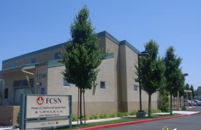

American High School (2018-2022)

AP Computer Science Principles(2020)
Web Design and Development(2020)
Larry Zhi
3441 Atwater Ct.
larryzhi1230@gmail.com
510-284-9103
I am a high school junior who is interested in computer science and web development. I am looking to become more proficient in front-end development, in order to gain some experience needed for college classes, and eventually job opportunities.
Ohlone College (2020)
American High School (2018-2022)
AP Computer Science Principles(2020)
Web Design and Development(2020)
Volunteership
Camp Campbell (October 2019)
Helped supervise 6th graders for a week at science camp in the Santa Cruz mountains
Gained leadership experience, as well as experience dealing with children. Taught me a lot about organization and scheduling, and refined my attention to detail.
FCSN - Friends of Children with Special Needs (August 2018-present)

Provide companionship with children with special needs, and engage them with various activities.
Gained leadership experience, as well as experience dealing with children. In addition to this, I also learned a lot more about patience.
Java (Proficient)
Python (Intermediate)
Html + Css (Intermediate)
JavaScript (Intermediate)
Android App Development (Proficient)
Github(Proficient)
Language Skills
English (Proficient)
Chinese - Mandarin (Proficient)